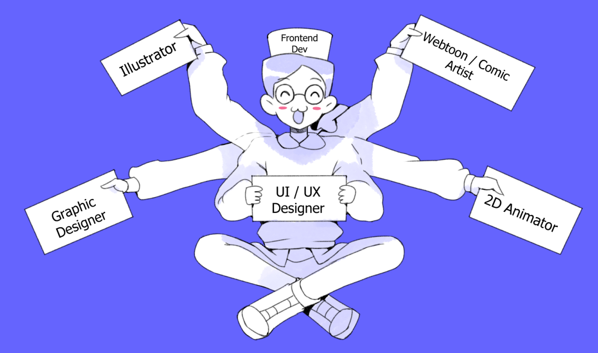

About Me
Hello ! I'm Anaïs, a formerly motion designer turned into UX designer. I changed careers because I wanted a job where I could apply the skills learned in my studies. During my artistic career, I learned how to organize a project efficiently from brief to delivery, while facilitating collaboration between colleagues. I'm able to explain my choices during a presentation in front of the public demonstrating my strong communcation skills.

My key skills as a UI/UX designer are :
Wireframing
Prototyping
Creating a Style Guide
Agile work method
Visual design
I'm looking for a full-time junior UI/UX designer position. If you have any questions, my portfolio and contact details are available.